1. Perceptron¶
import matplotlib.pyplot as plt
import numpy as np
import torch
import torch.nn as nn
import torch.nn.functional as F
import torch.optim as optim
%matplotlib inline
1.1. Global Settings¶
LEFT_CENTER = (3, 3)
RIGHT_CENTER = (3, -2)
1.2. Defining the Model¶
class Perceptron(nn.Module):
""" A Perceptron is one Linear layer """
def __init__(self, input_dim):
"""
Args:
input_dim (int): size of the input features
"""
super(Perceptron, self).__init__()
self.fc1 = nn.Linear(input_dim, 1)
def forward(self, x_in):
"""The forward pass of the MLP
Args:
x_in (torch.Tensor): an input data tensor.
x_in.shape should be (batch, input_dim)
Returns:
the resulting tensor. tensor.shape should be (batch, 1)
"""
return torch.sigmoid(self.fc1(x_in))
1.3. Get Data Function¶
def get_toy_data(batch_size, left_center=LEFT_CENTER, right_center=RIGHT_CENTER):
seed = 1337
torch.manual_seed(seed)
torch.cuda.manual_seed_all(seed)
np.random.seed(seed)
x_data = []
y_targets = np.zeros(batch_size)
for batch_i in range(batch_size):
if np.random.random() > 0.5:
x_data.append(np.random.normal(loc=left_center))
else:
x_data.append(np.random.normal(loc=right_center))
y_targets[batch_i] = 1
return torch.tensor(x_data, dtype=torch.float32), torch.tensor(y_targets, dtype=torch.float32)
1.4. Visualizing Results Function¶
def visualize_results(perceptron, x_data, y_truth, n_samples=1000, ax=None, epoch=None,
title='', levels=[0.3, 0.4, 0.5], linestyles=['--', '-', '--']):
y_pred = perceptron(x_data)
y_pred = (y_pred > 0.5).long().data.numpy().astype(np.int32)
x_data = x_data.data.numpy()
y_truth = y_truth.data.numpy().astype(np.int32)
n_classes = 2
all_x = [[] for _ in range(n_classes)]
all_colors = [[] for _ in range(n_classes)]
colors = ['black', 'white']
markers = ['o', '*']
for x_i, y_pred_i, y_true_i in zip(x_data, y_pred, y_truth):
all_x[y_true_i].append(x_i)
if y_pred_i == y_true_i:
all_colors[y_true_i].append("white")
else:
all_colors[y_true_i].append("black")
#all_colors[y_true_i].append(colors[y_pred_i])
all_x = [np.stack(x_list) for x_list in all_x]
if ax is None:
_, ax = plt.subplots(1, 1, figsize=(10,10))
for x_list, color_list, marker in zip(all_x, all_colors, markers):
ax.scatter(x_list[:, 0], x_list[:, 1], edgecolor="black", marker=marker, facecolor=color_list, s=300)
xlim = (min([x_list[:,0].min() for x_list in all_x]),
max([x_list[:,0].max() for x_list in all_x]))
ylim = (min([x_list[:,1].min() for x_list in all_x]),
max([x_list[:,1].max() for x_list in all_x]))
# hyperplane
xx = np.linspace(xlim[0], xlim[1], 30)
yy = np.linspace(ylim[0], ylim[1], 30)
YY, XX = np.meshgrid(yy, xx)
xy = np.vstack([XX.ravel(), YY.ravel()]).T
Z = perceptron(torch.tensor(xy, dtype=torch.float32)).detach().numpy().reshape(XX.shape)
ax.contour(XX, YY, Z, colors='k', levels=levels, linestyles=linestyles)
plt.suptitle(title)
if epoch is not None:
plt.text(xlim[0], ylim[1], "Epoch = {}".format(str(epoch)))
1.5. Initial Data Plot¶
seed = 1337
torch.manual_seed(seed)
torch.cuda.manual_seed_all(seed)
np.random.seed(seed)
x_data, y_truth = get_toy_data(batch_size=1000)
x_data = x_data.data.numpy()
y_truth = y_truth.data.numpy()
left_x = []
right_x = []
left_colors = []
right_colors = []
for x_i, y_true_i in zip(x_data, y_truth):
color = 'black'
if y_true_i == 0:
left_x.append(x_i)
left_colors.append(color)
else:
right_x.append(x_i)
right_colors.append(color)
left_x = np.stack(left_x)
right_x = np.stack(right_x)
_, ax = plt.subplots(1, 1, figsize=(10,4))
ax.scatter(left_x[:, 0], left_x[:, 1], color=left_colors, marker='*', s=100)
ax.scatter(right_x[:, 0], right_x[:, 1], facecolor='white', edgecolor=right_colors, marker='o', s=100)
plt.axis('off')
(-0.6789941847324372, 6.3322738468647, -5.551233220100403, 6.149525094032287)

1.6. The Training + intermittent data plots¶
lr = 0.01
input_dim = 2
batch_size = 1000
n_epochs = 12
n_batches = 5
perceptron = Perceptron(input_dim=input_dim)
optimizer = optim.Adam(params=perceptron.parameters(), lr=lr)
bce_loss = nn.BCELoss()
losses = []
x_data_static, y_truth_static = get_toy_data(batch_size)
fig, ax = plt.subplots(1, 1, figsize=(10,5))
visualize_results(perceptron, x_data_static, y_truth_static, ax=ax, title='Initial Model State')
plt.axis('off')
#plt.savefig('initial.png')
change = 1.0
last = 10.0
epsilon = 1e-3
epoch = 0
while change > epsilon or epoch < n_epochs or last > 0.3:
#for epoch in range(n_epochs):
for _ in range(n_batches):
optimizer.zero_grad()
x_data, y_target = get_toy_data(batch_size)
y_pred = perceptron(x_data).squeeze()
loss = bce_loss(y_pred, y_target)
loss.backward()
optimizer.step()
loss_value = loss.item()
losses.append(loss_value)
change = abs(last - loss_value)
last = loss_value
fig, ax = plt.subplots(1, 1, figsize=(10,5))
visualize_results(perceptron, x_data_static, y_truth_static, ax=ax, epoch=epoch,
title=f"{loss_value}; {change}")
plt.axis('off')
epoch += 1
#plt.savefig('epoch{}_toylearning.png'.format(epoch))
C:\Users\wei\AppData\Local\Temp/ipykernel_8888/1489453434.py:48: RuntimeWarning: More than 20 figures have been opened. Figures created through the pyplot interface (`matplotlib.pyplot.figure`) are retained until explicitly closed and may consume too much memory. (To control this warning, see the rcParam `figure.max_open_warning`).
fig, ax = plt.subplots(1, 1, figsize=(10,5))
 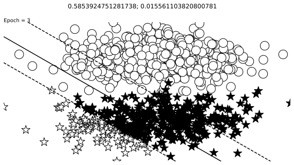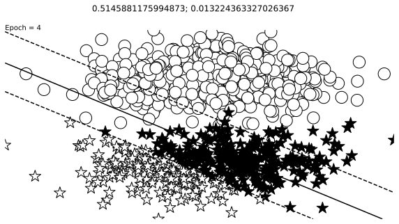
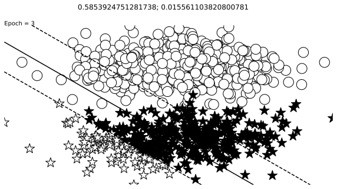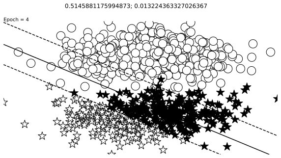


 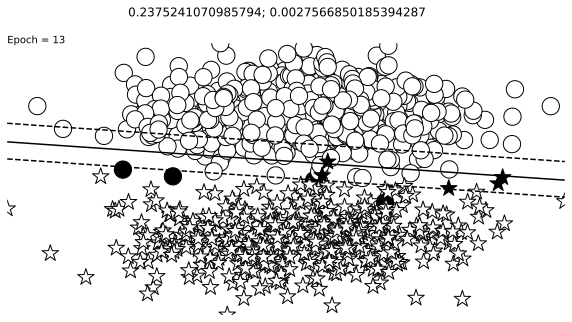
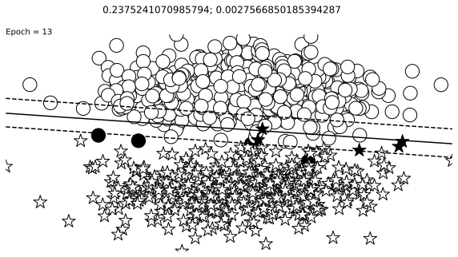 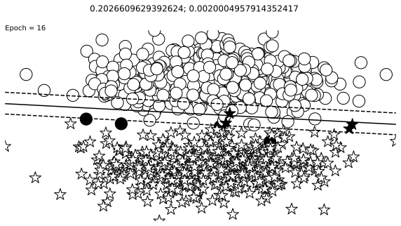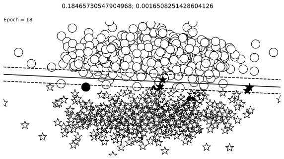
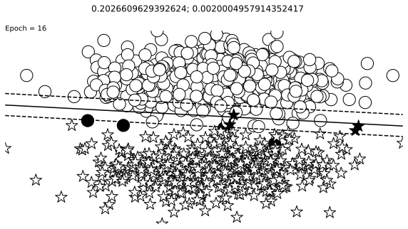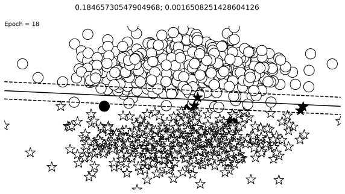


_, axes = plt.subplots(1,2,figsize=(12,4))
axes[0].scatter(left_x[:, 0], left_x[:, 1], facecolor='white',edgecolor='black', marker='o', s=300)
axes[0].scatter(right_x[:, 0], right_x[:, 1], facecolor='white', edgecolor='black', marker='*', s=300)
axes[0].axis('off')
visualize_results(perceptron, x_data_static, y_truth_static, epoch=None, levels=[0.5], ax=axes[1])
axes[1].axis('off')
plt.savefig('perceptron_final.png')
plt.savefig('perceptron_final.pdf')
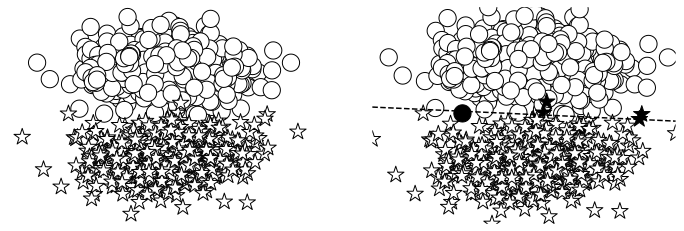